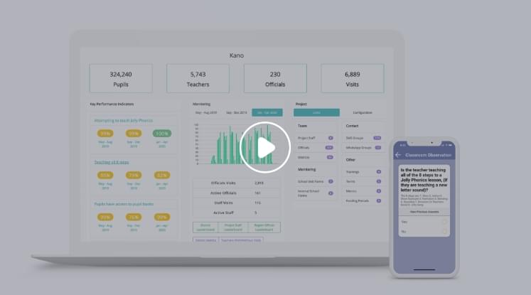

Measure Jolly Phonics projects performance
High fidelity monitoring and mentoring system at scale, in any context
Sign upDeveloped by Jolly Technologies.
Available to any Jolly Futures projects, in collaboration with Universal Learning Solutions.
Jolly Monitor is an app for Jolly Phonics school monitors to collect data during school visits
Monitor guidance
The App provides questions about the teacher and school and guides the monitor through a classroom observation.
Instant Mentoring Feedback
The App provides instant feedback to the monitor, and teacher on how the teaching can be improved. At the end of the visit, a report is generated to give to the teacher.
Pupil Assessments
The App can also be used to assess individual pupils, using the Phonics Screening Check, or another Early Grade Reading Assessment.
Data dashboard
The monitor has access to all the data from their schools, offline, whether collected themselves or by team members.
1,026
Monitors who have visited
3 or more schools
98,026
Pupil Assessments
21,861
School Visits
100+
Hours a day spent
in the app
35,094
Teacher Observations
250+
Daily Active Users
Analyse the data collected during the visit
After the visit, the phone has connects to the Internet and the data sync’s to a Dashboard.
Analyse the answers from school visits, for an individual project or across projects.
View the aggregated results from pupil assessments, which make it simple to understand the impact of the intervention.
Analyse the data collected during the visit
After the visit, the phone has connects to the Internet and the data sync’s to a Dashboard.
Analyse the answers from school visits, for an individual project or across projects.
View the aggregated results from pupil assessments, which make it simple to understand the impact of the intervention.
The Jolly Monitor system has been rolled out with Universal Learning Solutions across Nigeria, South Africa and Kenya.
It is available to any Jolly Futures projects, we aim to work with every project, empowering them with the tools that have been so successful with Universal Learning Solutions.
Further developments are underway, to improve the quality of the reports, simplicity of the interface, and accessibility of the data.
Jolly Monitor system is made in Valencia, Spain by Jolly Technologies, a company dedicated to building technology products that enable the successful teaching of reading and writing, with Jolly Phonics.